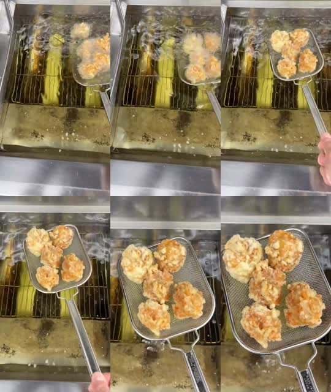
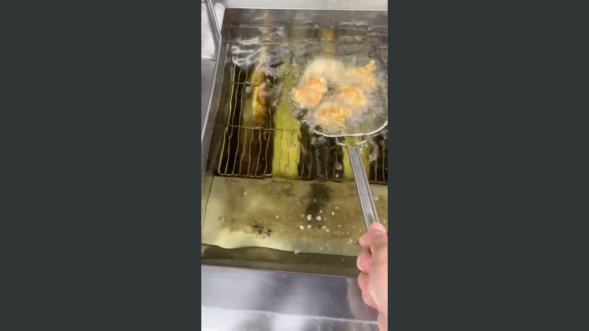

2026年10月10日確認カリッジュ PC用動画
左右のAI拡張・準備確認
AI生成はまだ実行していません。
LTX-2.3用モデルの追加取得（約30.18GB）について確認待ちです。サイト本体は変更していません。
使う実写の範囲
「揚げ_3.mp4」の19.0〜25.04秒。油から網を引き揚げる動作を、速度を変えずに残します。手元の原本は720×1280・30fps・27.03秒です。依頼文の512×910とは解像度が異なります。

選択範囲の実写。新しい唐揚げや手は生成していません。
横長にする配置

左右の灰色は補完予定の空欄です。AIの生成結果ではありません。中央の実写は全画角を残し、左右のフライヤー・油面だけを生成します。中央は全体幅の約32%、補完領域は約68%となるため、左右の構造と継ぎ目の確認が必要です。
確認できた環境と実行順
Wan2GP 12.52、RTX 3080 10GB、RAM約32GB、CUDA認識あり。FFmpegと必要な主要Pythonライブラリは既存環境にあります。手元の旧LTX 19Bは今回の2.3用Outpaintingには流用しません。
- LTX-2.3 Distilled int8と関連ファイルを取得（承認後）。
- 1024×576・17フレーム・8ステップ・profile 4・SDPAで短い動作確認。
- 通れば同設定で145フレーム／24fps（約6.04秒）を生成。6秒の10GB動作はまだ未確認です。
- 中央の全フレームを実写に戻し、画素のチェックサムを照合。AIによる商品・網・手の変形を中央に残さない処理です。
- 左右のちらつき・泡・継ぎ目・不要物を目視確認後、H.264／yuv420p／faststart／無音へ変換。
1280×720指定はこの版で1280×704に丸められるため、初回生成は正確な16:9の1024×576を採用し、最終1280×720へ通常のリサイズを行います。ネイティブ720p生成ではありません。元映像の動きは残すため、元撮影にある揺れも残ります。
通常LTX-2.3には音声の生成計算を完全に止める設定が見当たらないため、最終動画から音声トラックを除去します。DistilledはCFG=1で、Negative Promptの抑制効果には限界があります。
追加取得するファイル
取得元：Wan2GP作者のDeepBeepMeep/LTX-2。正確な合計は30,175,812,049バイト（30.18GB／28.10GiB）。既存のGemmaテキストエンコーダは再利用します。アップスケールをOFFにしても、この版のローダーが要求する関連ファイル2つを含みます。
| ltx-2.3-22b-distilled_diffusion_model_quanto_int8.safetensors | 19.448 GB |
| ltx-2.3-22b_vae.safetensors | 1.452 GB |
| ltx-2.3-22b_audio_vae.safetensors | 0.107 GB |
| ltx-2.3-22b_vocoder.safetensors | 0.258 GB |
| ltx-2.3-22b_text_embedding_projection.safetensors | 2.312 GB |
| ltx-2.3-22b_embeddings_connector.safetensors | 4.032 GB |
| ltx-2.3-spatial-upscaler-x2-1.1.safetensors | 0.996 GB |
| ltx-2.3-temporal-upscaler-x2-1.0.safetensors | 0.262 GB |
| ltx-2.3-22b-ic-lora-outpaint.safetensors | 1.309 GB |
設定と再現用ファイル
初回AI結果・最終動画・ポスターは、生成と確認が終わってから掲載します。現時点では未作成です。